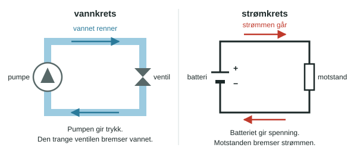
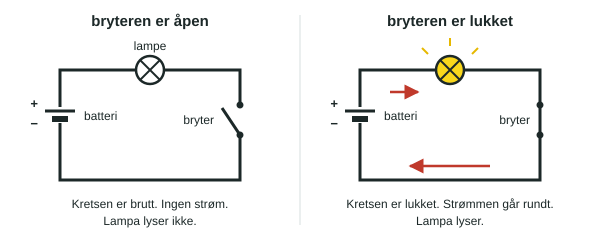

Strøm, spenning og resistans
Nesten alt i et prosessanlegg trenger strøm: pumper, vifter, givere, ventiler og styresystemet. Her lærer du de tre grunnbegrepene i elektro, strøm, spenning og resistans, og hvordan de henger sammen i Ohms lov.
Strøm er som vann i et rør
Du kan ikke se strøm. Derfor er det lurt å sammenligne med noe du kjenner: vann som pumpes rundt i et rør. Pumpen gir trykk, vannet renner, og en trang ventil bremser vannet. En strømkrets virker på nesten samme måte.

| Vannkrets | Strømkrets | Symbol og enhet |
|---|---|---|
| trykket fra pumpen | spenning | U, volt (V) |
| hvor mye vann som renner per sekund | strøm | I, ampere (A) |
| trang ventil eller tynt rør som bremser | resistans | R, ohm (Ω) |
Trykk lærte du om på siden Kraft og trykk. Modellen er ikke helt riktig på alle punkter, men den hjelper deg å forstå hvordan strøm, spenning og resistans virker sammen.
Elektrisk strøm
Elektrisk strøm er elektrisk ladning som beveger seg gjennom en leder. I metaller er det elektroner som beveger seg. Metaller har frie elektroner som kan flytte seg gjennom metallet. Det kan du lese om på siden Metallbinding i Kjemiske prinsipper.
Strømmen har symbolet I og måles i ampere (A). Jo flere elektroner som passerer et punkt i ledningen per sekund, jo større er strømmen. Små strømmer oppgis i milliampere (mA):
\[ 1 \text{ A} = 1000 \text{ mA} \]
En vannkoker trekker rundt 10 A. Signalet fra en giver i anlegget er bare 4–20 mA.
På tegninger viser vi strømretningen fra pluss (+) til minus (−) utenfor batteriet. Det er avtalt slik. Elektronene går faktisk motsatt vei, men det har ingen betydning for regningen på disse sidene.
Spenning
Spenning er det som driver strømmen gjennom kretsen, omtrent som trykket fra en pumpe. Spenningen har symbolet U og måles i volt (V). Uten spenning går det ingen strøm.
| Strømkilde | Spenning |
|---|---|
| vanlig batteri (AA) | 1,5 V |
| firkantet batteri | 9 V |
| strømforsyning til givere i anlegget | 24 V |
| stikkontakt | 230 V |
| større motorer i industrien | 400 V |
Et batteri lager spenning med en kjemisk reaksjon. Det lærer du om på siden Galvanisk element i Kjemiske prinsipper. Forskjellen på strømmen fra et batteri og strømmen i stikkontakten lærer du om på siden Likestrøm, vekselstrøm og trefase.
Resistans
Resistans er hvor mye noe bremser strømmen. Resistansen har symbolet R og måles i ohm (Ω). Jo større resistans, jo mindre strøm går det ved samme spenning.
- En elektrisk leder slipper strømmen lett gjennom. Kobber er den vanligste lederen i kabler, fordi det har svært lav resistans.
- En isolator slipper nesten ikke strøm gjennom. Plast, gummi, glass og tørr luft er isolatorer. Plasten rundt kobberet i en kabel er en isolator.
En lang og tynn ledning har større resistans enn en kort og tykk. Det er som med vann: et langt, tynt rør bremser mer enn et kort, tykt rør. Derfor har kabler til store motorer tykke ledere.
En motstand er en liten komponent med en bestemt resistans. Den brukes i elektronikk og på koblingsbrett for å styre hvor stor strømmen blir. Pass på forskjellen: motstanden er tingen, resistansen er hvor mye den bremser, målt i ohm.
Strømmen går bare i en lukket krets
Strømmen må ha en vei som går hele veien rundt: fra strømkilden, gjennom utstyret og tilbake. Det kalles en lukket krets. Blir kretsen brutt et sted, for eksempel med en bryter eller en ledning som har røket, stopper strømmen i hele kretsen.

Ohms lov
Strøm, spenning og resistans henger sammen. Sammenhengen kalles Ohms lov:
\[ U = R \cdot I \]
- U = spenning (V)
- R = resistans (Ω)
- I = strøm (A)
Ohms lov sier at strømmen blir dobbelt så stor hvis spenningen blir dobbelt så stor, så lenge resistansen er den samme. Og den sier at strømmen blir halvparten så stor hvis resistansen blir dobbelt så stor, så lenge spenningen er den samme.
Du kan snu formelen etter hva du skal finne:
\[ I = \frac{U}{R} \qquad R = \frac{U}{I} \]
Regn alltid med volt, ampere og ohm. Er strømmen oppgitt i mA, gjør du den om til A først. Da blir svaret riktig.
Oppgave: Du kobler en motstand på 18 Ω til et batteri på 9,0 V. Hvor stor blir strømmen?
Løsning:
- Vi vet: \( U = 9{,}0 \text{ V} \) og \( R = 18 \ \Omega \). Vi skal finne I.
- Formelen: \( I = \dfrac{U}{R} \)
- Sett inn: \( I = \dfrac{9{,}0 \text{ V}}{18 \ \Omega} = 0{,}50 \text{ A} \)
Svar: Strømmen blir 0,50 A, som er 500 mA.
Oppgave: Et varmeelement er koblet til 230 V og trekker 10 A. Hvor stor resistans har det?
Løsning:
- Vi vet: \( U = 230 \text{ V} \) og \( I = 10 \text{ A} \). Vi skal finne R.
- Formelen: \( R = \dfrac{U}{I} \)
- Sett inn: \( R = \dfrac{230 \text{ V}}{10 \text{ A}} = 23 \ \Omega \)
Svar: Varmeelementet har en resistans på 23 Ω.
Oppgave: En trykkgiver sender et signal på 4–20 mA. Inne i styresystemet går signalet gjennom en motstand på 250 Ω, og styresystemet måler spenningen over motstanden. Hvor stor er spenningen ved 4 mA og ved 20 mA?
Løsning:
- Gjør om til ampere: 4 mA = 0,004 A og 20 mA = 0,020 A.
- Formelen: \( U = R \cdot I \)
- Ved 4 mA: \( U = 250 \ \Omega \cdot 0{,}004 \text{ A} = 1{,}0 \text{ V} \)
- Ved 20 mA: \( U = 250 \ \Omega \cdot 0{,}020 \text{ A} = 5{,}0 \text{ V} \)
Svar: Spenningen er 1,0 V ved 4 mA og 5,0 V ved 20 mA. Noen styresystemer leser signalet på denne måten. Mer om signalet lærer du på siden Signalet 4–20 mA i Automasjon.
Strøm og spenning kan du måle med et multimeter. Det lærer du på siden Kretser i serie og parallell.
Kroppen leder strøm, og strøm gjennom kroppen kan stoppe hjertet. Allerede 230 V fra en stikkontakt kan drepe. Fuktig hud og våte hender gir lavere resistans, og da blir strømmen gjennom kroppen større. Batterier og koblingsbrett på skolen har lav spenning og er trygge å ta på, men kortslutter du et batteri, kan det bli varmt eller begynne å brenne. Etter norske regler skal arbeid på elektriske anlegg, med 230 V eller 400 V, gjøres av elektrofagfolk i en registrert elvirksomhet. Les mer på siden Elektrisk sikkerhet.
Test deg selv
Hvilken enhet har resistans?
- volt (V)
- ampere (A)
- ohm (Ω)
Resistans måles i ohm. Spenning måles i volt, og strøm måles i ampere.
Spenningen over en motstand blir dobbelt så stor. Resistansen er den samme. Hva skjer med strømmen?
- Den blir halvparten så stor.
- Den er den samme.
- Den blir dobbelt så stor.
Etter Ohms lov er \( I = U/R \). Når U dobles og R er den samme, dobles også I.
En motstand på 4,0 Ω er koblet til 12 V. Hvor stor er strømmen?
- 0,33 A
- 3,0 A
- 48 A
\( I = \dfrac{U}{R} = \dfrac{12 \text{ V}}{4{,}0 \ \Omega} = 3{,}0 \text{ A} \). 48 A får du hvis du ganger i stedet for å dele.
Hvor mye er 20 mA i ampere?
- 0,020 A
- 0,20 A
- 2,0 A
1 A = 1000 mA. Da er 20 mA = 20/1000 A = 0,020 A.
Hvilket stoff er en isolator?
- kobber
- plast
- stål
Plast slipper nesten ikke strøm gjennom, og brukes derfor rundt lederne i kabler. Kobber og stål er metaller og leder strøm.
Ordliste
| Begrep | Forklaring | Engelsk |
|---|---|---|
| elektrisk strøm | Elektrisk ladning, oftest elektroner, som beveger seg gjennom en leder. Måles i ampere (A). | |
| ampere | Enheten for elektrisk strøm. 1 A = 1000 mA. | |
| spenning | Det som driver strømmen gjennom en krets, omtrent som trykket fra en pumpe. Måles i volt (V). | |
| volt | Enheten for spenning. | |
| resistans | Hvor mye noe bremser strømmen. Måles i ohm (Ω). | |
| ohm | Enheten for resistans. Tegnet er Ω. | |
| Ohms lov | Sammenhengen mellom spenning, resistans og strøm: U = R · I. | |
| strømkrets | En lukket vei der strømmen kan gå rundt, fra strømkilden gjennom utstyret og tilbake. | |
| elektrisk leder | Et stoff som slipper strøm lett gjennom, for eksempel kobber. | |
| isolator | Et stoff som nesten ikke slipper strøm gjennom, for eksempel plast og gummi. | |
| motstand | En komponent med en bestemt resistans, som brukes for å styre hvor stor strømmen blir. Ordet brukes også om selve resistansen. | resistor |
Les mer
- Neste side, Elektrisk effekt og energi, bygger videre på denne siden og på Energi, arbeid og effekt.
- Signalet 4–20 mA i Automasjon viser hvordan strøm brukes til å sende måleverdier.
Om kildene: Teksten, eksemplene og figurene på denne siden er laget for dette nettstedet. Siden bygger på undervisningsopplegg i kjemiprosess- og laboratoriefag ved Sauda vgs, som er utarbeidet med utgangspunkt i blant annet Kjemien stemmer, Laboranten og åpne nettkilder.